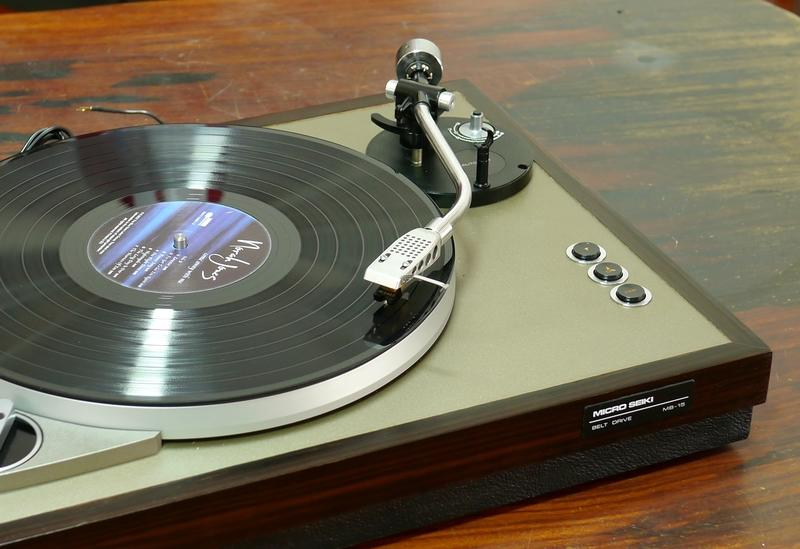
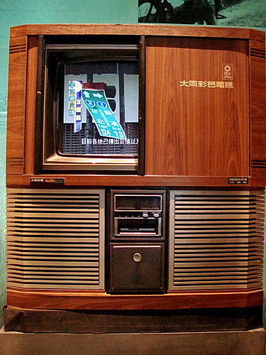
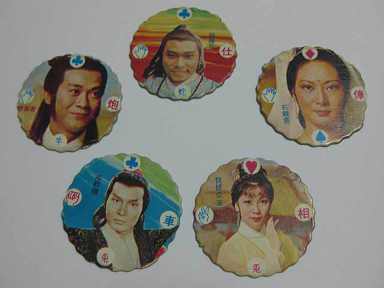

爸媽的學生時代，正值台灣經濟起飛，戒嚴也還沒解除。生活中除了念書，往往還要擔負家裡的經濟重擔，並留心學校各種嚴格的規定。但有音樂相伴，生活似乎也不那麼苦了，在串流平台還沒盛行的年代，聽音樂可比現在有儀式感多了，全家圍著一台唱片機，安靜地聽著樂音徐徐流出⋯⋯

在沒有雷神巧克力、沒有珍奶冰棒、沒有 LADY M 的年代，嘴饞時要吃什麼才好呢？對了！去柑仔店走一趟好了！裡面的零食多樣又便宜，小包裝也方便口袋不深的學生族群購買；又或著上街去找那沿街叫喚的麵茶小販，來一碗熱呼呼的麵茶；有或著過年應景吃得南棗核桃糕，讓你步步高升⋯⋯
古早味零食，也是很厲害的呢！
什麼？竟然覺得父母的童年只有黑白電視？那就大錯特錯囉！其實 1950 年代末期，彩色動畫就開始陪伴著我們的父母走過童年，吹起一波波的卡通熱潮，讓我們沿著記憶的長河行旅，搭上卡通時光機，尋訪熟悉的主題曲，再度邂逅經典吧！
跳房子、打彈珠、尪仔標……，這些聽起來耳熟能詳的遊戲你都知道怎麼玩嗎？其實這些童玩大部分都有很多種的玩法，是父母年代的孩子們快樂的泉源之一，來聽聽看我們介紹的其中一種玩法，然後回家和爸爸媽媽分享吧！
